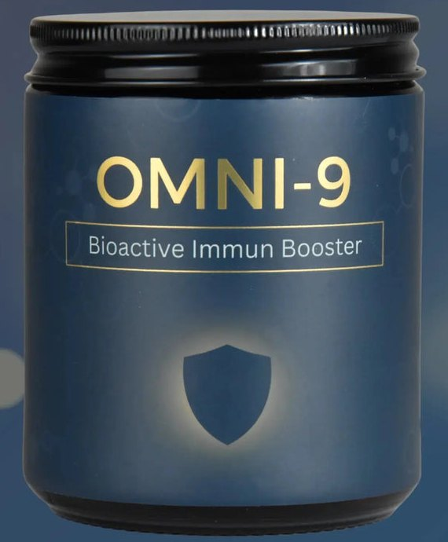

Dein Produkt
Bioaktives Nutrition-System
Deine tägliche Basis für alle 9 Regenerations-Achsen.
Seit wie vielen Tagen nimmst du OMNI9?
Schieb den Regler auf deinen Tag. Dann siehst du, was gerade in deinem Körper passiert.
Dein Fortschritt im Körper
Die Zeitangaben dienen als Orientierung und stammen aus echten Bewertungen. Jeder Körper ist anders.
Deine Vorteile mit OMNI9
So geht es für dich weiter
- 1Heute
Start-Video ansehen und den ersten Teelöffel nehmen.
Zur Einnahme - 2Tag 1 bis 30
Jeden Tag einen Teelöffel, am besten immer zur gleichen Zeit.
Zum 30-Tage-Plan - 3Bevor das Glas leer ist
Ein Glas reicht 30 Tage. Mit automatischer Lieferung kostet es 69 € statt 89 €.
Zum Nachkauf
So nimmst du OMNI9
Ein Löffel. Jeden Tag. Ohne Aufwand.
1 Teelöffel pro Tag
Immer zur gleichen Zeit, zum Beispiel morgens. So wird es schnell zur Routine.
- Morgens1 Teelöffeloder zu deiner festen Zeit
- MittagsNichts mehr nötig
- AbendsNichts mehr nötig
Empfindlicher Darm? So startest du sanft.
- Die ersten TageEtwas weniger als einen Teelöffel
- Danach1 Teelöffel pro Tag
So klappt es
- Stell das Glas sichtbar hin, etwa neben die Kaffeemaschine. Dann vergisst du deinen Löffel nicht.
- Ein Glas hat 30 Portionen und reicht einen Monat.
- Andere Supplements? Viele nutzen OMNI9 als Basis, die den Rest ersetzt oder stark reduziert.
Deine ersten 30 Tage
So wird OMNI9 zu deiner Routine.
- Tag 1 bis 3
Sanft starten. Ist dein Darm empfindlich, nimm anfangs etwas weniger als einen Teelöffel.
- Tag 4 bis 14
Jeden Tag einen Teelöffel, am besten immer zur gleichen Zeit.
- Tag 15 bis 30
Dranbleiben. Regelmäßigkeit ist die Voraussetzung dafür, dass Regeneration stattfinden kann.
- Bevor das Glas leer ist
Ein Glas enthält 30 Portionen. Bestell rechtzeitig nach, damit deine Routine nicht abreißt.
So bleibst du dran
- Ein fester Zeitpunkt, zum Beispiel morgens, macht OMNI9 zum Ritual.
- Ein Löffel genügt. Du musst nichts abwiegen, mischen oder kombinieren.
- Fragen unterwegs? Der Assistent oben rechts antwortet dir sofort.
Wenn es hakt
So kommst du wieder rein, wenn es mal nicht rund läuft.
Ich vergesse es
Nimm deinen Löffel immer zur gleichen Zeit, zum Beispiel morgens. Stell das Glas sichtbar hin, etwa neben die Kaffeemaschine. Am leichtesten klappt es, wenn du die Einnahme mit etwas verknüpfst, das du sowieso jeden Tag machst.
Mein Bauch rumort
Ist dein Darm empfindlich, nimm die ersten Tage weniger und steigere dann langsam auf einen Teelöffel. So pendelt sich dein System gut ein.
Der Geschmack ist ungewohnt
Das schreiben einige in den Bewertungen. Sie berichten auch, dass man sich schnell daran gewöhnt. Ein Tipp aus einer Bewertung: den Löffel langsam im Mund zergehen lassen.
Ich merke noch nichts
Das ist bei jedem anders. In den ersten Tagen merken manche noch nichts. Wichtig ist, dass du jeden Tag dranbleibst. Einige schreiben nach 2 bis 3 Wochen von mehr Energie.
Sieh nach, was an deinem Tag passiert
So ging es anderen
Echte Bewertungen von omni9.de, nach Zeitpunkt sortiert. Jeder Körper ist anders.
- Nach 5 Tagen
„Ich nehme es erst seit fünf Tagen. Ich kann es noch nicht beurteilen.“
Ralf V., verifizierter Kauf
- In Woche 2
„Ich bin nun in der zweiten Woche der Einnahme und meine, dass mein Körper jetzt schon mehr in den Ruhemodus geschaltet hat. Ich bin ausgeglichener und kann nachts besser schlafen.“
Marc W., verifizierter Kauf
- Nach 2,5 Wochen
„Habe Omni 9 zum ersten Mal ausprobiert und merke nach 2.5 Wochen schon deutlich mehr Energie. Der Geschmack ist gewöhnungsbedürftig, aber es wird zum Ritual und kostet keine große Überwindung.“
Ruth E., verifizierter Kauf
- Glas 1 fast leer
„Erstes Glas fast leer ist gut man muß sich an den Geschmack gewöhnen aber es geht mir besser“
Claudia B., verifizierter Kauf
Dein Ziel, deine Tipps
3 kurze Fragen zu deinem Ziel und deinem Alltag. Dann bekommst du ausführliche Tipps, die zu dir passen.
Was in OMNI9 steckt
16 Zutaten mit 51 Mikronährstoff- und Wirkstoff-Komponenten, verbunden in einer bioaktiven Honigmatrix. Zusammen versorgen sie alle 9 Regenerations-Achsen deines Körpers.
Tiefer einsteigen? Frag den Assistenten
Er kennt jede Zutat und jede Achse und antwortet sofort.
Zusammenspiel statt Supplement-Chaos
Einzelstoffe wirken oft kaum, weil der passende Partner fehlt. OMNI9 kombiniert deshalb Paare, die sich gegenseitig verstärken.
- Curcumin + PiperinPiperin verstärkt die Wirkung von Curcumin um ein Vielfaches.
- Vitamin D3 + K2D3 bringt Calcium in den Körper, K2 bringt es an den richtigen Ort.
- Vitamin C + PolyphenoleGemeinsamer Zellschutz gegen oxidativen Stress, wie in echter Nahrung.
Die 9 Regenerations-Achsen
Tipp auf eine Achse und sieh, wie OMNI9 sie versorgt.
Entzündungs- & Schmerz-Achse
Stille Entzündungen regulieren
- Typischer Alltag
- Morgens steif, diffuse Beschwerden, ein schwerer Körper, Nebel im Kopf. Das Gefühl, ständig unter Strom zu stehen.
- Darin steckt
- Bio-Curcumin + Bio-PiperinOmega-3 aus Bio-AlgenölBio-PhycocyaninBio-GranatapfelPterostilben
- Warum das hilft
- Stille Entzündungen wirken wie ein Schwelbrand im Gewebe und halten deinen Körper im Daueralarm. Curcumin und Omega-3 setzen an unterschiedlichen Stellen an. Piperin verbessert die Verfügbarkeit von Curcumin. Phycocyanin, Granatapfel und Pterostilben verstärken den Zellschutz.
Darm- & Mikrobiom-Achse
Darm beruhigen, Nährstoffaufnahme verbessern
- Typischer Alltag
- Blähbauch, ein schwerer Magen, Müdigkeit nach dem Essen. Supplements bringen kaum einen spürbaren Unterschied.
- Darin steckt
- Bacillus coagulansBio-AkazienfaserHonig-Oligosaccharide aus Bio-Buchweizenhonig
- Warum das hilft
- Ein gereizter Darm ist wie ausgelaugter Boden: Nur ein Teil der Nährstoffe kommt wirklich an. Akazienfaser nährt hilfreiche Darmbakterien. Die Sporenkultur Bacillus coagulans unterstützt das Darmmilieu. Wird der Darm stabiler, nimmt er Nährstoffe wieder besser auf.
Zellenergie- & Mitochondrien-Achse
Tagesenergie ohne Crash
- Typischer Alltag
- Trotz Schlaf nicht erholt, ein halber Akku am Morgen, das Nachmittagsloch. Nach kleinen Belastungen völlig leer.
- Darin steckt
- Aktives NADHPterostilbenVitamin B6 als P5PVitamin B9 als 5-MTHFVitamin B12 als MethylcobalaminOmega-3 und Antioxidantien
- Warum das hilft
- Deine Mitochondrien liefern die Energie für Gehirn, Muskeln und Nerven. NADH unterstützt die Prozesse, durch die dort ATP entsteht. Die aktiven B-Vitamine liefern wichtige Cofaktoren. So entsteht Energie nicht als kurzer Schub, sondern als stabile Kraft über den Tag.
Stress- & Cortisol-Achse
Vom Daueralarm zurück in die Regeneration
- Typischer Alltag
- Müde, aber innerlich unruhig. Schnell gereizt. Der Kopf schaltet nicht ab, und der Schlaf erholt nicht.
- Darin steckt
- Bio-AshwagandhaAktive B-VitamineVitamin D3 aus Bio-FlechteVitamin K2 aus Bio-NattoOmega-3Zink aus Bio-GuavenblattBio-Acerola und Bio-Granatapfel
- Warum das hilft
- Bleibt dein Stresssystem dauerhaft aktiv, kann dein Körper nicht gut zwischen Anspannung und Erholung wechseln. Ashwagandha unterstützt die Regulation der Stressachse. Die aktiven B-Vitamine versorgen dein Nervensystem. So kann Schlaf wieder zu echter Regeneration werden.
Neuro- & Fokus-Achse
Klarer Kopf, weniger Nebel
- Typischer Alltag
- Du liest Sätze zweimal, Wörter fallen dir nicht ein, die Konzentration lässt schnell nach.
- Darin steckt
- Bio-Lion’s-ManeAktive B-VitamineAktives NADHBio-Ginkgo-BilobaBio-Acerola und Bio-Granatapfel
- Warum das hilft
- Dein Gehirn braucht gleichzeitig Energie, Durchblutung und stabile Nervenverbindungen. Lion’s Mane unterstützt die Nervenregeneration, Ginkgo die Versorgung des Gehirns. DHA ist ein wichtiger Baustein der Nervenzellen. NADH liefert dazu Zellenergie.
Immun- & Schleimhaut-Achse
Immunabwehr stabilisieren
- Typischer Alltag
- Du fühlst dich schnell angeschlagen, Stress wirft dich aus der Bahn, und nach Belastungen brauchst du lange, um dich zu erholen.
- Darin steckt
- Vitamin C aus Bio-AcerolaVitamin D3 aus Bio-FlechteZink aus Bio-GuavenblattPolyphenole aus Bio-GranatapfelSporen-ProbiotikaPräbiotika aus Bio-Akazienfaser
- Warum das hilft
- Ein großer Teil deiner Immunregulation beginnt im Darm und an den Schleimhäuten. Bacillus coagulans und Akazienfaser stabilisieren die Grundlage im Darm. Vitamin C, D3 und Zink versorgen zentrale Bereiche deiner Abwehr.
Herz-, Gefäß- & Gewebe-Achse
Infrastruktur von innen
- Typischer Alltag
- Wenig Belastbarkeit, kalte Hände und Füße, der Kreislauf fühlt sich blockiert an.
- Darin steckt
- Omega-3 (DHA/EPA)Vitamin K2 MK-7ZinkBio-GranatapfelPterostilbenVitamin CBio-Ginkgo-Biloba
- Warum das hilft
- Gefäße und Zellmembranen sind das Transportsystem deines Körpers. Omega-3 unterstützt flexible Zellmembranen, Ginkgo die Mikrozirkulation, Vitamin C Kollagen und Gefäßstruktur. So kommen Sauerstoff und Nährstoffe dort an, wo sie gebraucht werden.
Entgiftungs- & Leber-Achse
Die Müllabfuhr deines Körpers entlasten
- Typischer Alltag
- Innerlich belastet, träge, schlechte Regeneration nach Stress oder schwerem Essen.
- Darin steckt
- Bio-SpirulinaBio-PhycocyaninBio-GranatapfelBio-CurcuminBio-PiperinPterostilbenVitamin C aus Bio-Acerola
- Warum das hilft
- Leber und Zellen haben eigene Reinigungs- und Recyclingsysteme, die bei Dauerstress nicht mehr hinterherkommen. Spirulina liefert Aminosäuren und Pflanzenstoffe. Phycocyanin, Curcumin, Granatapfel und Vitamin C fangen freie Radikale ab.
Bioverfügbarkeits-Achse
Damit Nährstoffe da ankommen, wo sie sollen
- Typischer Alltag
- Du hast schon Vitamine, Pulver und Kapseln genommen, aber kaum einen Unterschied gespürt.
- Darin steckt
- Enzymaktive HonigmatrixBio-AkazienfaserBacillus coagulansBio-PiperinMikroverkapseltes NADHVitamin D3 + K2Vitamin C + Zink
- Warum das hilft
- Die bioaktive Honigmatrix wirkt als natürliches Transportsystem und steigert die Aufnahme der Nährstoffe im Darm um bis zu 600 %. Akazienfaser und Bacillus coagulans unterstützen die Bedingungen für die Aufnahme, Piperin die Verfügbarkeit von Curcumin. NADH ist durch Mikroverkapselung geschützt.
Alle 16 Zutaten
- Basis: Bio-BuchweizenhonigDie bioaktive Matrix verbindet alle 16 Zutaten und steigert ihre Aufnahme im Darm um bis zu 600 %.
- Bio-Acerola-ExtraktNatürliches Vitamin C
- Bio-AkazienfaserLösliche Ballaststoffe
- Probiotika-MixSporen von Bacillus coagulans und subtilis
- Bio-Kurkuma-Extrakt95 % Curcuminoide
- Bio-Pfeffer-Extrakt95 % Piperin
- Bio-Ceylon-ZimtNatürlich und aromatisch
- Bio-Ashwagandha-Extrakt5 % Withanolide
- Bio-PhycocyaninAus Spirulina
- Bio-SpirulinaNährstoffreiche Mikroalge
- Bio-FlechtenextraktNatürliche Vitamin-D3-Quelle
- Bio-NattoNatürliches Vitamin K2 (MK-7)
- Bio-AlgenextraktMineralstoffreich und natürlich
- Bio-Lion’s-Mane-Extrakt30 % Beta-Glucane
- Bio-Ginkgo-Biloba-Extrakt24 % Flavonglykoside
- Bio-Granatapfel-Extrakt40 % Polyphenole
- Bio-Guavenblatt-ExtraktNatürliche Zinkquelle
Im Detail
Tipp auf ein Bild für die große Ansicht.
Rechtzeitig nachbestellen
Ein Glas hat 30 Portionen und reicht bei einem Teelöffel pro Tag einen Monat. Bestell rechtzeitig nach, damit deine Routine nicht abreißt.
Einmal nachbestellen
89,00 €pro Glas, zzgl. 3,90 € Versand
- 1 Glas mit 30 Portionen
- Lieferung mit DHL in 2–7 Tagen
- Keine weitere Bindung
Automatisch liefern lassen
69,00 €89,00 €pro Lieferung, zzgl. 3,90 € Versand
- Kommt automatisch, ohne dass du daran denken musst
- Mindestens 2 Lieferungen, danach jederzeit kündbar oder pausierbar
- Einfach in deinem Kundenkonto verwalten
Beide Knöpfe führen direkt zur sicheren Kasse von omni9.de. Bezahlen kannst du zum Beispiel mit Klarna, Apple Pay oder Google Pay.
Was OMNI9 dir ersetzt
Tipp an, was du vorher einzeln genommen hast. Die Preise pro Monat stammen aus dem Vergleich auf omni9.de.
Mehr auf Vorrat
In beiden Sets ist der Immun Booster gratis dabei.

Passt dazu: Immun Booster
Deine Akut-Unterstützung, wenn ein Infekt kommt. Viele nehmen ihn für ein paar Tage zusätzlich zu OMNI9.
Fragen und Hilfe
Die häufigsten Fragen nach dem Kauf und alle Wege zu uns.
Häufige Fragen
Wie nehme ich OMNI9 ein?
Einen Teelöffel pro Tag. Kein Protokoll, kein Pillenregal, kein Rätselraten. Genau dafür ist OMNI9 gedacht.
Was, wenn ich einen empfindlichen Darm habe?
Genau dafür enthält OMNI9 das Darm-Fundament. Starte die ersten Tage mit weniger und steigere dann auf die Standardmenge. So stellt sich dein System gut darauf ein.
Kann ich OMNI9 mit meinen Supplements kombinieren?
Ja. OMNI9 ist aber dafür gedacht, dass du nicht 8 bis 16 Mittel parallel brauchst. Viele nutzen OMNI9 als Basis, die den Rest ersetzt oder stark reduziert.
Treibt der Honig meinen Blutzucker hoch?
OMNI9 ist als kleines tägliches Ritual gedacht, nicht als Snack. Als Teil deines Alltags geht es dabei nicht um mehr Zucker, sondern um die Unterstützung deines Systems.
Für wen ist OMNI9 gemacht?
Für Menschen, die funktionieren müssen, aber merken: Der Bauch ist unruhig, der Kopf benebelt, die Energie bricht weg, und der Schlaf erholt nicht. Und die keine Lust mehr auf Supplement-Chaos haben.
Für wen ist OMNI9 nicht das Richtige?
Wenn du nur einen kurzen Kick suchst. OMNI9 ist auf Regeneration und Stabilität ausgelegt, nicht auf kurze Leistungsspitzen.
Allergien oder Unverträglichkeiten?
Bist du sehr empfindlich oder hast du bekannte Allergien, prüf bitte die Zutatenliste und kläre es im Zweifel ärztlich ab.
Schwangerschaft, Stillzeit oder Vorerkrankungen?
Bitte kläre die Einnahme vorab ärztlich ab.